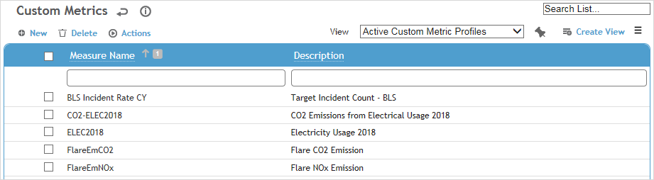
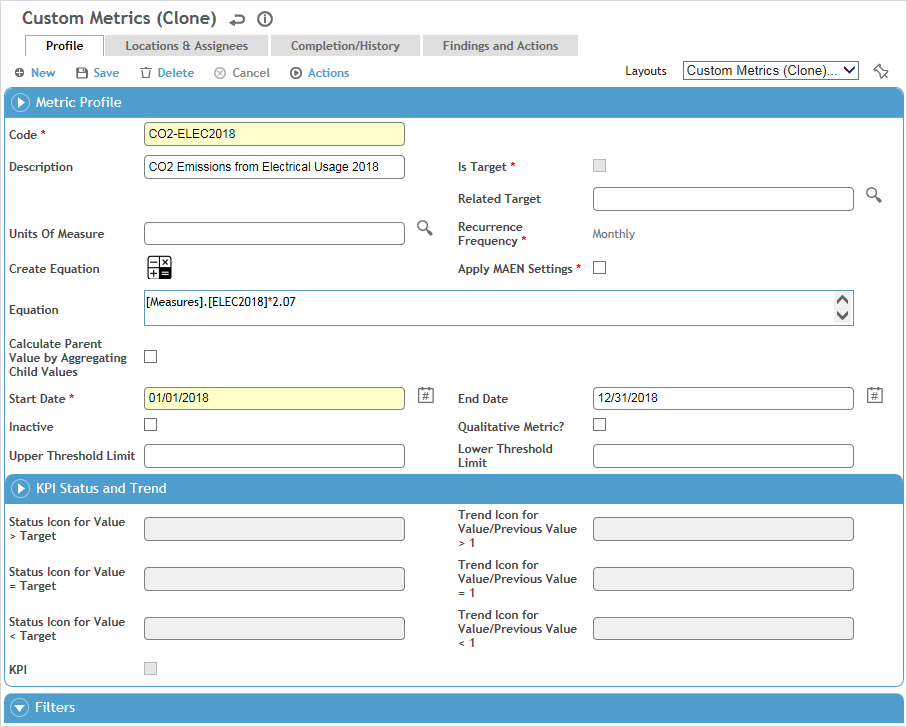

In the Business Intelligence menu, click Custom Metrics, or in the Environmental menu, click Measure.

Users can view all measures that are not prohibited
(see Setting
Up Roles), but only an administrator can add or edit a metric.
This list of measures includes the standard Cority Measures
that are read-only and cannot be edited nor assigned to a location
or user. These measures can only be used in equations within
custom metrics and the Data Cube. When you click on one of these you
will see the metric information in a read-only state.
A measure cannot be deleted if it is part of a campaign (see Grouping
Metrics into a Campaign).
If you want to create a custom measure linked to a Report Writer subquery, you must use a custom layout that includes the Subquery field. A custom measure linked to a subquery cannot contain an equation, be a target, or have locations/assignees records, and no findings or actions can be created against the metrics in the Completion/History tab.
Click a link to edit an existing measure, or click New.

To create a metric that is very similar to an existing one, select the metric and choose Actions»Clone Custom Metric. A copy is created with “Cn” appended to the name. Open and edit the copied metric as required.
On the Profile tab, enter the following information:
Enter a Code and Description for the metric.
If this metric is typically entered all at once by the user (e.g, 12 monthly targets entered at the start of a year), select Is Target. The Equation field is disabled for target metrics.
If this metric is not a target, you can choose a Related Target; this field allows you to choose from other metrics that are defined as Is Target. This connection is used by the Objectives module to facilitate tracking actual vs target.Select the Units of Measure and Recurrence Frequency. If the metric is tracked more than once but not at a set interval, choose Irregular.
When a custom metric has a related target, Cority ensures that their recurrence frequencies cannot be mismatched.
Optionally, enter an Equation or click
 to use the formula builder to compose
the formula.
to use the formula builder to compose
the formula.
In the formula builder, select an element from the tabs on the left (Custom Measures, Cority Measures, Factors, or Org Tree Attributes) and click Add to Formula, and use the calculator buttons in the bottom right. Repeat as required to build your formula. When you click OK, the builder closes and the formula is inserted into the Equation field.
You can define a metrics tree to organize and aggregate metrics in a parent-child relationship. The Equation field of the top/parent metric will reflect its children. See Creating a Metrics Tree below.
Select Apply MAEN Settings to automatically notify assigned users when they have a metric due.
If you select this checkbox, you can override the default notification settings if necessary: select Override System-wide MAEN Settings for this metric, and change the settings in the Automatic Email Notifications section as required. The settings in this section, whether default or overwritten, will apply to each metric assignment associated with the record.
Select the Start Date for the metric. Do not enter an End Date unless you want recurring metric entries to stop. An inactive metric is no longer due after this date (but any metric entries assigned before the End Date will still be considered due). If you selected Apply MAEN Settings, notifications will not be sent out after this date.
If you chose to Calculate Parent Value by Aggregating Child Values, the data cube will aggregate (in the background) the calculated value for each child organizational tree node and assign it to the parent node. If this checkbox is not selected, the data cube will calculate parent node values by performing the calculation in the Equation field. For example:
Given:
Measure A (input), Measure B (input), and Measure C = A x B
Location: USA>CA and US>NY
USA>CA: Measure A = 2 and Measure B = 4
USA>NY: Measure A = 3 and Measure B = 5If checkbox is not selected on Measure C, the results are as follows:
Measure A Measure B Measure C
USA 5 9 45 (sum of A x sum of B at a parent node)
USA>CA 2 4 8
USA>NY 3 5 15If checkbox is selected on Measure C, the results are as follows:
Measure A Measure B Measure C
USA 5 9 23 (sum of C at leaf node)
USA>CA 2 4 8
USA>NY 3 5 15To create a qualitative metric for use in reporting qualitative sustainability information for the Global Reporting Initiative (GRI) or any other sustainability reporting protocols, select the Qualitative Metric? check box. Any values entered in the Units of Measure or Equation fields are cleared.
If you included other measures in the Equation field, you can apply filters to limit those measures. In the Filters section, click
 to select the dimension(s) related
to the measures in the Equation
field.
to select the dimension(s) related
to the measures in the Equation
field.Optionally, enter the Upper and Lower Threshold Limit. If a user inputs a value below the Lower Threshold Limit, they are asked if they want to continue. If they input a value above the Upper Threshold Limit, they are required to enter a reason.
If the metric is not a target and a Related Target is selected and the Qualitative Metric checkbox is not selected, the metric will automatically be deemed a Key Performance Indicator. Optionally change the icons that will be used to represent the value compared to the target and the value compared to the previous value. If you do not want the metric to be considered a KPI, clear the KPI check box. This functionality allows you to generate dashboard scorecards for Custom Measures that have KPI properties. A scorecard shows the measure's value along with the status of that value against the measure's target and the trend of its values, period-over-period (as shown on Data tab of the Data Cube).
On the Locations and Assignees tab, click New:
Choose whether you want to assign the metric to an asset or to a user.
Select the person Assigned to complete the metric entry and their Start Date.
To render the assignee inactive for this metric, enter an End Date. An inactive assignee no longer accumulates due metric entries, but any metric entries accumulated before this date will still be considered due.
If you chose to assign the metric to an asset, select the Related Asset.
Select the specific location where this metric entry is to be captured. This is often a sub-location to the location identified for the metric. If you chose to assign the metric to an asset, the metric inherits the GDDLOFB of the asset.
Only one assignee is permitted per metric/location
for a particular time period.
If added to a custom layout, you can assign the metric to an asset
or a group of assets (if defined in the EquipmentGroup
look-up table).
If you attempt to create more than one assignment with the same asset,
GDDLOFB and time period, you will receive an error message.
If you create more than one assignment with the same GDDLOFB and time
period but with unique assets, you will be advised that the assignment
may result in duplicate aggregations for this tree combination if
reported data is not filtered or displayed by asset.
The Completion/ History tab shows all metric entries (regular users will only see metrics to which they have been assigned).
The top list shows Due and Overdue Metric Entries (can be changed to just Due Metric Entries). Click a link to view or change the value entered (inspector can record the value from this link) or approve the entry.
To quickly update multiple metrics, select the check boxes beside them and click Edit. The Value field becomes editable directly in the list.
The bottom list shows Completed Metric Entries. Optionally, select one or more records and choose Actions»Create Finding & Action for this Entry.
The Findings and Actions tab displays all findings and actions relating to this metric. For information about recording a finding and its actions, see Recording a New Finding.